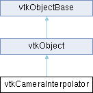

|
Etrek
|
|
Etrek
|
interpolate a series of cameras to update a new camera More...
#include <vtkCameraInterpolator.h>

Public Types | |
| enum | { INTERPOLATION_TYPE_LINEAR = 0 , INTERPOLATION_TYPE_SPLINE , INTERPOLATION_TYPE_MANUAL } |
Public Member Functions | |
| vtkTypeMacro (vtkCameraInterpolator, vtkObject) | |
| void | PrintSelf (ostream &os, vtkIndent indent) override |
| int | GetNumberOfCameras () |
| void | Initialize () |
| void | AddCamera (double t, vtkCamera *camera) |
| void | RemoveCamera (double t) |
| void | InterpolateCamera (double t, vtkCamera *camera) |
| vtkMTimeType | GetMTime () override |
| double | GetMinimumT () |
| double | GetMaximumT () |
| vtkSetClampMacro (InterpolationType, int, INTERPOLATION_TYPE_LINEAR, INTERPOLATION_TYPE_MANUAL) | |
| vtkGetMacro (InterpolationType, int) | |
| void | SetInterpolationTypeToLinear () |
| void | SetInterpolationTypeToSpline () |
| void | SetInterpolationTypeToManual () |
| virtual void | SetPositionInterpolator (vtkTupleInterpolator *) |
| vtkGetObjectMacro (PositionInterpolator, vtkTupleInterpolator) | |
| virtual void | SetFocalPointInterpolator (vtkTupleInterpolator *) |
| vtkGetObjectMacro (FocalPointInterpolator, vtkTupleInterpolator) | |
| virtual void | SetViewUpInterpolator (vtkTupleInterpolator *) |
| vtkGetObjectMacro (ViewUpInterpolator, vtkTupleInterpolator) | |
| virtual void | SetViewAngleInterpolator (vtkTupleInterpolator *) |
| vtkGetObjectMacro (ViewAngleInterpolator, vtkTupleInterpolator) | |
| virtual void | SetParallelScaleInterpolator (vtkTupleInterpolator *) |
| vtkGetObjectMacro (ParallelScaleInterpolator, vtkTupleInterpolator) | |
| virtual void | SetClippingRangeInterpolator (vtkTupleInterpolator *) |
| vtkGetObjectMacro (ClippingRangeInterpolator, vtkTupleInterpolator) | |
| Public Member Functions inherited from vtkObject | |
| vtkBaseTypeMacro (vtkObject, vtkObjectBase) | |
| virtual void | DebugOn () |
| virtual void | DebugOff () |
| bool | GetDebug () |
| void | SetDebug (bool debugFlag) |
| virtual void | Modified () |
| void | PrintSelf (ostream &os, vtkIndent indent) override |
| void | RemoveObserver (unsigned long tag) |
| void | RemoveObservers (unsigned long event) |
| void | RemoveObservers (const char *event) |
| void | RemoveAllObservers () |
| vtkTypeBool | HasObserver (unsigned long event) |
| vtkTypeBool | HasObserver (const char *event) |
| vtkTypeBool | InvokeEvent (unsigned long event) |
| vtkTypeBool | InvokeEvent (const char *event) |
| std::string | GetObjectDescription () const override |
| unsigned long | AddObserver (unsigned long event, vtkCommand *, float priority=0.0f) |
| unsigned long | AddObserver (const char *event, vtkCommand *, float priority=0.0f) |
| vtkCommand * | GetCommand (unsigned long tag) |
| void | RemoveObserver (vtkCommand *) |
| void | RemoveObservers (unsigned long event, vtkCommand *) |
| void | RemoveObservers (const char *event, vtkCommand *) |
| vtkTypeBool | HasObserver (unsigned long event, vtkCommand *) |
| vtkTypeBool | HasObserver (const char *event, vtkCommand *) |
| template<class U, class T> | |
| unsigned long | AddObserver (unsigned long event, U observer, void(T::*callback)(), float priority=0.0f) |
| template<class U, class T> | |
| unsigned long | AddObserver (unsigned long event, U observer, void(T::*callback)(vtkObject *, unsigned long, void *), float priority=0.0f) |
| template<class U, class T> | |
| unsigned long | AddObserver (unsigned long event, U observer, bool(T::*callback)(vtkObject *, unsigned long, void *), float priority=0.0f) |
| vtkTypeBool | InvokeEvent (unsigned long event, void *callData) |
| vtkTypeBool | InvokeEvent (const char *event, void *callData) |
| virtual void | SetObjectName (const std::string &objectName) |
| virtual std::string | GetObjectName () const |
| Public Member Functions inherited from vtkObjectBase | |
| const char * | GetClassName () const |
| virtual vtkTypeBool | IsA (const char *name) |
| virtual vtkIdType | GetNumberOfGenerationsFromBase (const char *name) |
| virtual void | Delete () |
| virtual void | FastDelete () |
| void | InitializeObjectBase () |
| void | Print (ostream &os) |
| void | Register (vtkObjectBase *o) |
| virtual void | UnRegister (vtkObjectBase *o) |
| int | GetReferenceCount () |
| void | SetReferenceCount (int) |
| bool | GetIsInMemkind () const |
| virtual void | PrintHeader (ostream &os, vtkIndent indent) |
| virtual void | PrintTrailer (ostream &os, vtkIndent indent) |
| virtual bool | UsesGarbageCollector () const |
Static Public Member Functions | |
| static vtkCameraInterpolator * | New () |
| Static Public Member Functions inherited from vtkObject | |
| static vtkObject * | New () |
| static void | BreakOnError () |
| static void | SetGlobalWarningDisplay (vtkTypeBool val) |
| static void | GlobalWarningDisplayOn () |
| static void | GlobalWarningDisplayOff () |
| static vtkTypeBool | GetGlobalWarningDisplay () |
| Static Public Member Functions inherited from vtkObjectBase | |
| static vtkTypeBool | IsTypeOf (const char *name) |
| static vtkIdType | GetNumberOfGenerationsFromBaseType (const char *name) |
| static vtkObjectBase * | New () |
| static void | SetMemkindDirectory (const char *directoryname) |
| static bool | GetUsingMemkind () |
Protected Member Functions | |
| void | InitializeInterpolation () |
| Protected Member Functions inherited from vtkObject | |
| void | RegisterInternal (vtkObjectBase *, vtkTypeBool check) override |
| void | UnRegisterInternal (vtkObjectBase *, vtkTypeBool check) override |
| void | InternalGrabFocus (vtkCommand *mouseEvents, vtkCommand *keypressEvents=nullptr) |
| void | InternalReleaseFocus () |
| Protected Member Functions inherited from vtkObjectBase | |
| virtual void | ReportReferences (vtkGarbageCollector *) |
| vtkObjectBase (const vtkObjectBase &) | |
| void | operator= (const vtkObjectBase &) |
Protected Attributes | |
| int | InterpolationType |
| vtkTupleInterpolator * | PositionInterpolator |
| vtkTupleInterpolator * | FocalPointInterpolator |
| vtkTupleInterpolator * | ViewUpInterpolator |
| vtkTupleInterpolator * | ViewAngleInterpolator |
| vtkTupleInterpolator * | ParallelScaleInterpolator |
| vtkTupleInterpolator * | ClippingRangeInterpolator |
| int | Initialized |
| vtkTimeStamp | InitializeTime |
| vtkCameraList * | CameraList |
| Protected Attributes inherited from vtkObject | |
| bool | Debug |
| vtkTimeStamp | MTime |
| vtkSubjectHelper * | SubjectHelper |
| std::string | ObjectName |
| Protected Attributes inherited from vtkObjectBase | |
| std::atomic< int32_t > | ReferenceCount |
| vtkWeakPointerBase ** | WeakPointers |
Additional Inherited Members | |
| Static Protected Member Functions inherited from vtkObjectBase | |
| static vtkMallocingFunction | GetCurrentMallocFunction () |
| static vtkReallocingFunction | GetCurrentReallocFunction () |
| static vtkFreeingFunction | GetCurrentFreeFunction () |
| static vtkFreeingFunction | GetAlternateFreeFunction () |
interpolate a series of cameras to update a new camera
This class is used to interpolate a series of cameras to update a specified camera. Either linear interpolation or spline interpolation may be used. The instance variables currently interpolated include position, focal point, view up, view angle, parallel scale, and clipping range.
To use this class, specify the type of interpolation to use, and add a series of cameras at various times "t" to the list of cameras from which to interpolate. Then to interpolate in between cameras, simply invoke the function InterpolateCamera(t,camera) where "camera" is the camera to be updated with interpolated values. Note that "t" should be in the range (min,max) times specified with the AddCamera() method. If outside this range, the interpolation is clamped. This class copies the camera information (as compared to referencing the cameras) so you do not need to keep separate instances of the camera around for each camera added to the list of cameras to interpolate.
| anonymous enum |
Enums to control the type of interpolation to use.
| void vtkCameraInterpolator::AddCamera | ( | double | t, |
| vtkCamera * | camera ) |
Add another camera to the list of cameras defining the camera function. Note that using the same time t value more than once replaces the previous camera value at t. At least one camera must be added to define a function.
| double vtkCameraInterpolator::GetMinimumT | ( | ) |
Obtain some information about the interpolation range. The numbers returned are undefined if the list of cameras is empty.
|
overridevirtual |
Override GetMTime() because we depend on the interpolators which may be modified outside of this class.
Reimplemented from vtkObject.
| int vtkCameraInterpolator::GetNumberOfCameras | ( | ) |
Return the number of cameras in the list of cameras.
| void vtkCameraInterpolator::Initialize | ( | ) |
Clear the list of cameras.
| void vtkCameraInterpolator::InterpolateCamera | ( | double | t, |
| vtkCamera * | camera ) |
Interpolate the list of cameras and determine a new camera (i.e., fill in the camera provided). If t is outside the range of (min,max) values, then t is clamped to lie within this range.
|
static |
Instantiate the class.
|
overridevirtual |
Methods invoked by print to print information about the object including superclasses. Typically not called by the user (use Print() instead) but used in the hierarchical print process to combine the output of several classes.
Reimplemented from vtkObjectBase.
| void vtkCameraInterpolator::RemoveCamera | ( | double | t | ) |
Delete the camera at a particular parameter t. If there is no camera defined at location t, then the method does nothing.
|
virtual |
Set/Get the tuple interpolator used to interpolate the clipping range portion of the camera. Note that you can modify the behavior of the interpolator (linear vs spline interpolation; change spline basis) by manipulating the interpolator instances directly.
|
virtual |
Set/Get the tuple interpolator used to interpolate the focal point portion of the camera. Note that you can modify the behavior of the interpolator (linear vs spline interpolation; change spline basis) by manipulating the interpolator instances directly.
|
virtual |
Set/Get the tuple interpolator used to interpolate the parallel scale portion of the camera. Note that you can modify the behavior of the interpolator (linear vs spline interpolation; change spline basis) by manipulating the interpolator instances directly.
|
virtual |
Set/Get the tuple interpolator used to interpolate the position portion of the camera. Note that you can modify the behavior of the interpolator (linear vs spline interpolation; change spline basis) by manipulating the interpolator instances directly.
|
virtual |
Set/Get the tuple interpolator used to interpolate the view angle portion of the camera. Note that you can modify the behavior of the interpolator (linear vs spline interpolation; change spline basis) by manipulating the interpolator instances directly.
|
virtual |
Set/Get the tuple interpolator used to interpolate the view up portion of the camera. Note that you can modify the behavior of the interpolator (linear vs spline interpolation; change spline basis) by manipulating the interpolator instances directly.
| vtkCameraInterpolator::vtkSetClampMacro | ( | InterpolationType | , |
| int | , | ||
| INTERPOLATION_TYPE_LINEAR | , | ||
| INTERPOLATION_TYPE_MANUAL | ) |
These are convenience methods to switch between linear and spline interpolation. The methods simply forward the request for linear or spline interpolation to the instance variable interpolators (i.e., position, focal point, clipping range, orientation, etc.) interpolators. Note that if the InterpolationType is set to "Manual", then the interpolators are expected to be directly manipulated and this class does not forward the request for interpolation type to its interpolators.